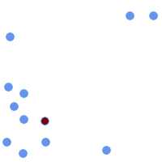
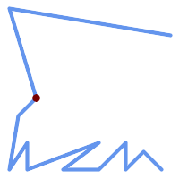
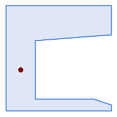
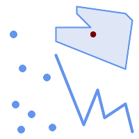

Name
ST_PointOnSurface — ポリゴン内またはジオメトリ上にあるのが保証されたポイントを返します。
Synopsis
geometry ST_PointOnSurface(geometry g1);
説明
サーフェス (POLYGON、MULTIPOLYGON、CURVED POLYGON)内部にあることが保証されたPOINTを返します。PostGISでは、この関数はラインジオメトリとポイントジオメトリ上でも動作します。
 This method implements the OGC Simple Features
Implementation Specification for SQL 1.1. s3.2.14.2 // s3.2.18.2
This method implements the OGC Simple Features
Implementation Specification for SQL 1.1. s3.2.14.2 // s3.2.18.2
This method implements the SQL/MM specification. SQL-MM 3: 8.1.5, 9.5.6. 仕様では、サーフェスジオメトリのみのST_PointOnSurfaceが定義されています。PostGISは、すべての一般的なジオメトリタイプに対応するよう拡張しています。他のデータベース (Oracle、DB2、ArcSDE)は、サーフェスに対してのみこの機能をサポートしているようです。SQL Server 2008では、すべての一般的なジオメトリタイプに対応しています。
This function supports 3d and will not drop the z-index.
例

| 
|

| 
|
SELECT ST_AsText(ST_PointOnSurface('POINT(0 5)'::geometry));
------------
POINT(0 5)
SELECT ST_AsText(ST_PointOnSurface('LINESTRING(0 5, 0 10)'::geometry));
------------
POINT(0 5)
SELECT ST_AsText(ST_PointOnSurface('POLYGON((0 0, 0 5, 5 5, 5 0, 0 0))'::geometry));
----------------
POINT(2.5 2.5)
SELECT ST_AsEWKT(ST_PointOnSurface(ST_GeomFromEWKT('LINESTRING(0 5 1, 0 0 1, 0 10 2)')));
----------------
POINT(0 0 1)
例: ST_Centroidで計算されたポイントはポリゴンの外になる場合があるのに対して、ST_PointOnSurfaceの結果はポリゴン内に存在することが保証されます。
赤: サーフェス上のポイント、緑: 重心
SELECT ST_AsText(ST_PointOnSurface(geom)) AS pt_on_surf,
ST_AsText(ST_Centroid(geom)) AS centroid
FROM (SELECT 'POLYGON ((130 120, 120 190, 30 140, 50 20, 190 20,
170 100, 90 60, 90 130, 130 120))'::geometry AS geom) AS t;
pt_on_surf | centroid
-----------------+---------------------------------------------
POINT(62.5 110) | POINT(100.18264840182648 85.11415525114155)